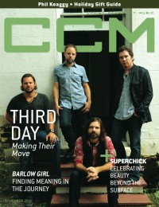

CMnexus
:
Contemporary Christian culture, music, and media.
Magazines
Profiles
Dove Awards
cmnexus.org
CM
nexus
→
Profiles
→
C
→
Matt Conner
Matt Conner
< -- Prev
ious
Next-- >
1
2
3
4
5
6
7
8
9
10
Writing credits listing
Jul 2010
in
YouthWorker
26.6
Gateway Worship
-
The More I Seek You
Jimmy Needham
-
Nightlights
Tenth Avenue North
-
The Light Meets The Dark
The Burchfield Brothers
-
Times and Seasons
Jul 2010
in
CCM Digital
"Freedom Sings"
4Troops
Joel Augé
-
Invisible Things
The Newsboys
-
Born Again
Audrey Assad
-
The House You're Building
Maylene and the Sons of Disaster
-
III
William Fitzsimmons
-
Derivatives
Darwin Hobbs
-
Champion
The Fringe:
Matthew Mayfield
Aug 2010
in
CCM Digital
Jesus Culture
-
Consumed
Natalie Grant
-
Love Revolution
Regie Hamm
-
Set It On Fire
Casting Crowns
-
Until the Whole World Hears... Live
Ed Kowalczyk
-
Alive
Robert Randolph and the Family Band
-
We Walk This Road
What's Next:
Kerrie Roberts
The Fringe:
Mat Kearney
Sep 2010
in
HM
#145
The Afters
House of Heroes
Disciple
-
Horseshoes & Handgrenades
The Choir
-
Burning Like The Midnight Sun
Rick Altizer
-
I Want Mine
Sep 2010
in
YouthWorker
27.1
Future of Forestry
-
Travel III
Darwin Hobbs
-
Champion
Joel Augé
-
Invisible Things
Sep 2010
in
CCM Digital
Lincoln Brewster
-
Real Life
Bebo Norman
-
Ocean
Chris Sligh
-
The Anatomy of Broken
House of Heroes
-
Suburba
The Arcade Fire
-
The Suburbs
The Fringe:
Vlada
Oct 2010
in
CCM Digital
"Defending the Faith, One Intelligible Conversation at a Time"
Larry Taunton, Fixed Point Foundation
"Group Project: Jars of Clay's Unexpected Sheltered Community"
Jars of Clay
Paul Wilbur
-
Desert Rain
Matthew West
-
The Story of Your Life
Caedmon's Call
-
Raising Up the Dead
The Farewell Drifters
-
Yellow Tag Mondays
John Reuben
-
Zappin
The Fringe:
John Mandeville
Nov 2010
in
HM
#146
Future of Forestry
-
Advent: Christmas EP, Vol. 2
Jars of Clay
-
The Shelter
Philmont
-
The Transition EP
Same As Sunday
-
Earn Your Stripes
39 Stripes
-
Beyond Broken
Nov 2010
in
YouthWorker
27.2
The Arcade Fire
-
The Suburbs
Bebo Norman
-
Ocean

Nov 2010
in
CCM Digital
"Movin' Back Down: Third Day Returns to its Southern Roots"
Third Day
< -- Prev
ious
Next-- >
1
2
3
4
5
6
7
8
9
10
CMnexus
(noun)
The magazine index
of modern music
and Christianity
© 2011 CMnexus. Last updated May 2025.
Contact:
Rants and other correspondence to:
editor -AT- cmnexus
-DØT- org
About